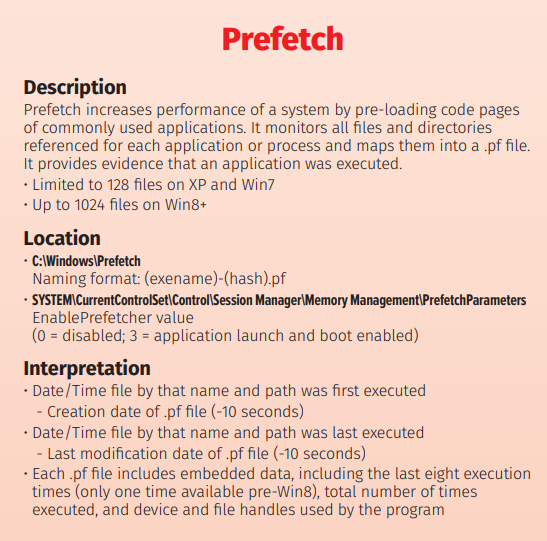
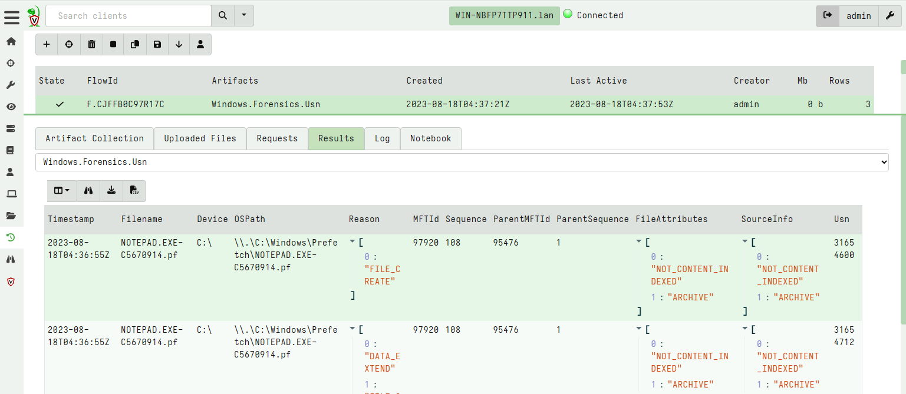
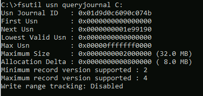
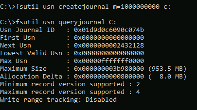
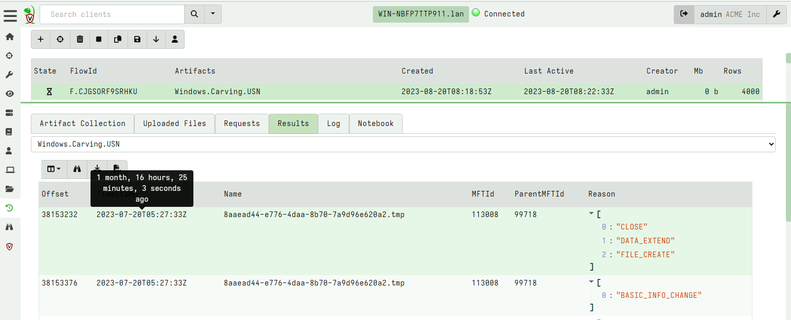
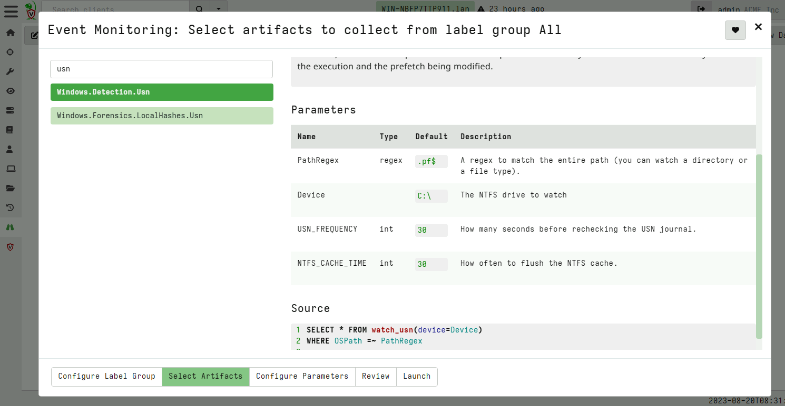
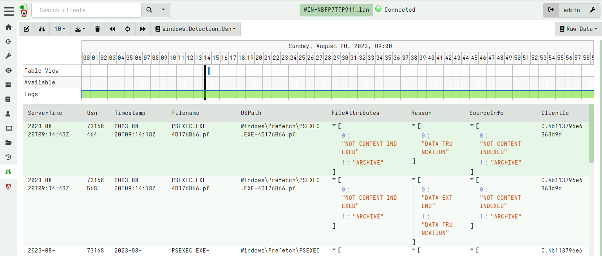

<!-- .slide: class="content" --> ## File based forensic artifacts <div class="container"> <div class="col"> ## Prefetch files * Useful to determine evidence of execution * Only enabled on non-server Windows Versions. </div> <div class="col">  </div> --- <!-- .slide: class="content" --> ## Prefetch files Enable prefetcher on windows server OS's ```text reg add "HKEY_LOCAL_MACHINE\SYSTEM\CurrentControlSet\Control\Session Manager\Memory Management\PrefetchParameters" /v EnablePrefetcher /t REG_DWORD /d 3 /f reg add "HKEY_LOCAL_MACHINE\Software\Microsoft\Windows NT\CurrentVersion\Prefetcher" /v MaxPrefetchFiles /t REG_DWORD /d 8192 /f powershell /c "Enable-MMAgent -OperationAPI" ``` --- <!-- .slide: class="content" --> ## Filesystem artifacts: USN * The USN Journal records filesystem operations * Operations are recorded in the hidden NTFS file `$Extend\$UsnJrnl:$J` * The USN journal rolls over fairly quickly (Approx 30mb) --- <!-- .slide: class="content" --> ## Using the USN journal in IR Filtering the USN journal for prefetch file modifications gives useful timestamps related to program execution!  --- <!-- .slide: class="content" --> ## Querying the USN journal * The [fsutil tool](https://learn.microsoft.com/en-us/windows-server/administration/windows-commands/fsutil-usn) can be used to manipulate the USN journal. <div class="container"> <div class="col">  </div> <div class="col">  </div> --- <!-- .slide: class="content" --> ## Attackers may clear the USN journal * Attacker can completely delete the USN Journal. * We are forced to carve the disk for USN records!  --- <!-- .slide: class="content" --> ## What can we do with an agent? * Forward USN records off the system in a timely fasion.  --- <!-- .slide: class="content" --> ## Forwarding USN logs off the system 